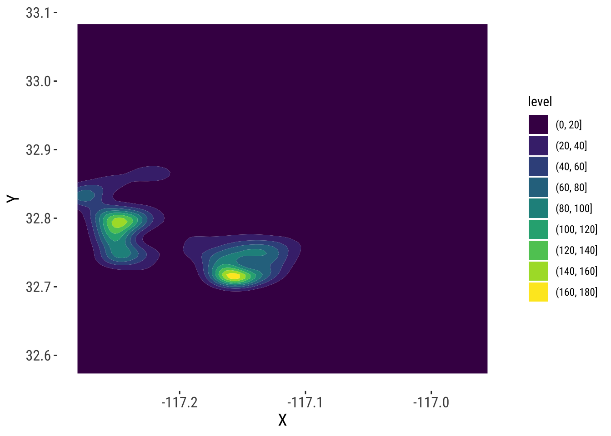

# For pretty table
library(knitr)
# All things geodata
library(sf)
library(sp)
# Pretty graphics
library(ggplot2)
library(gridExtra)
# Thematic maps
library(tmap)
# Pretty maps
library(ggmap)
# For all your interpolation needs
library(gstat)
# For data manipulation
library(plyr)4 Point Data Analysis
This chapter is based on the following references, which are great follow-up’s on the topic:
- Lovelace, Nowosad, and Muenchow (2019) offer a great introduction.
- Chapter 6 of Brunsdon and Comber (2015), in particular subsections 6.3 and 6.7.
- Bivand, Pebesma, and Gómez-Rubio (2013) provides an in-depth treatment of spatial data in R.
4.1 Dependencies
We will rely on the following libraries in this section, all of them included in Section 1.4.1:
Before we start any analysis, let us set the path to the directory where we are working. We can easily do that with setwd(). Please replace in the following line the path to the folder where you have placed this file -and where the house_transactions folder with the data lives.
setwd('.')4.2 Data
For this session, we will use the set of Airbnb properties for San Diego (US), borrowed from the “Geographic Data Science with Python” book (see here for more info on the dataset source). This covers the point location of properties advertised on the Airbnb website in the San Diego region.
Let us start by reading the data, which comes in a GeoJSON:
db <- st_read("data/abb_sd/regression_db.geojson")Reading layer `regression_db' from data source
`/Users/franciscorowe/Dropbox/Francisco/uol/teaching/envs453/202223/san/data/abb_sd/regression_db.geojson'
using driver `GeoJSON'
Simple feature collection with 6110 features and 19 fields
Geometry type: POINT
Dimension: XY
Bounding box: xmin: -117.2812 ymin: 32.57349 xmax: -116.9553 ymax: 33.08311
Geodetic CRS: WGS 84We can then examine the columns of the table with the colnames method:
colnames(db) [1] "accommodates" "bathrooms" "bedrooms"
[4] "beds" "neighborhood" "pool"
[7] "d2balboa" "coastal" "price"
[10] "log_price" "id" "pg_Apartment"
[13] "pg_Condominium" "pg_House" "pg_Other"
[16] "pg_Townhouse" "rt_Entire_home.apt" "rt_Private_room"
[19] "rt_Shared_room" "geometry" The rest of this session will focus on two main elements of the table: the spatial dimension (as stored in the point coordinates), and the nightly price values, expressed in USD and contained in the price column. To get a sense of what they look like first, let us plot both. We can get a quick look at the non-spatial distribution of house values with the following commands:
# Create the histogram
hist <- qplot(data=db,x=price)Warning: `qplot()` was deprecated in ggplot2 3.4.0.hist`stat_bin()` using `bins = 30`. Pick better value with `binwidth`.
This basically shows there is a lot of values concentrated around the lower end of the distribution but a few very large ones. A usual transformation to shrink these differences is to take logarithms. The original table already contains an additional column with the logarithm of each price (log_price).
# Create the histogram
hist <- qplot(data=db, x=log_price)
hist`stat_bin()` using `bins = 30`. Pick better value with `binwidth`.
To obtain the spatial distribution of these houses, we need to focus on the geometry column. The easiest, quickest (and also “dirtiest”) way to get a sense of what the data look like over space is using plot:
plot(st_geometry(db))
Now this has the classic problem of cluttering: some portions of the map have so many points that we can’t tell what the distribution is like. To get around this issue, there are two solutions: binning and smoothing.
4.3 Binning
The two-dimensional sister of histograms are binning maps: we divide each of the two dimensions into “buckets”, and count how many points fall within each bucket. Unlike histograms, we encode that count with a color gradient rather than a bar chart over an additional dimension (for that, we would need a 3D plot). These “buckets” can be squares (left) or hexagons (right):
# Squared binning
# Set up plot
sqbin <- ggplot() +
# Add 2D binning with the XY coordinates as
# a dataframe
geom_bin2d(
data=as.data.frame(st_coordinates(db)),
aes(x=X, y=Y)
)
# Hex binning
# Set up plot
hexbin <- ggplot() +
# Add hex binning with the XY coordinates as
# a dataframe
geom_hex(
data=as.data.frame(st_coordinates(db)),
aes(x=X, y=Y)
) +
# Use viridis for color encoding (recommended)
scale_fill_continuous(type = "viridis")
# Bind in subplots
grid.arrange(sqbin, hexbin, ncol=2)
4.4 KDE
Kernel Density Estimation (KDE) is a technique that creates a continuous representation of the distribution of a given variable, such as house prices. Although theoretically it can be applied to any dimension, usually, KDE is applied to either one or two dimensions.
4.4.1 One-dimensional KDE
KDE over a single dimension is essentially a contiguous version of a histogram. We can see that by overlaying a KDE on top of the histogram of logs that we have created before:
# Create the base
base <- ggplot(db, aes(x=log_price))
# Histogram
hist <- base +
geom_histogram(bins=50, aes(y=..density..))
# Overlay density plot
kde <- hist +
geom_density(fill="#FF6666", alpha=0.5, colour="#FF6666")
kdeWarning: The dot-dot notation (`..density..`) was deprecated in ggplot2 3.4.0.
ℹ Please use `after_stat(density)` instead.
The key idea is that we are smoothing out the discrete binning that the histogram involves. Note how the histogram is exactly the same as above shape-wise, but it has been rescalend on the Y axis to reflect probabilities rather than counts.
4.4.2 Two-dimensional (spatial) KDE
Geography, at the end of the day, is usually represented as a two-dimensional space where we locate objects using a system of dual coordinates, X and Y (or latitude and longitude). Thanks to that, we can use the same technique as above to obtain a smooth representation of the distribution of a two-dimensional variable. The crucial difference is that, instead of obtaining a curve as the output, we will create a surface, where intensity will be represented with a color gradient, rather than with the second dimension, as it is the case in the figure above.
To create a spatial KDE in R, we can use general tooling for non-spatial points, such as the stat_density2d_filled method:
# Create the KDE surface
kde <- ggplot(data = db) +
stat_density2d_filled(
data = as.data.frame(st_coordinates(db)),
aes(x = X, y = Y, alpha = ..level..),
n = 16
) +
# Tweak the color gradient
scale_color_viridis_c() +
# White theme
theme_bw()
# Tip! Add invisible points to improve proportions
kde + geom_sf(alpha=0)
This approach generates a surface that represents the density of dots, that is an estimation of the probability of finding a house transaction at a given coordinate. However, without any further information, they are hard to interpret and link with previous knowledge of the area. To bring such context to the figure, we can plot an underlying basemap, using a cloud provider such as Google Maps or, as in this case, OpenStreetMap. To do it, we will leverage the library ggmap, which is designed to play nicely with the ggplot2 family (hence the seemingly counterintuitive example above). Before we can plot them with the online map, we need to reproject them though.
# Reproject coordinates
lon_lat <- st_transform(db, crs = 4326) %>%
st_coordinates() %>%
as.data.frame()
# Basemap
qmplot(
X,
Y,
data = lon_lat,
geom="blank"
) +
# KDE
stat_density2d_filled(
data = lon_lat,
aes(x = X, y = Y, alpha = ..level..),
n = 16
) +
# Tweak the color gradient
scale_color_viridis_c()
4.5 Spatial Interpolation
The previous section demonstrates how to visualize the distribution of a set of spatial objects represented as points. In particular, given a bunch of house locations, it shows how one can effectively visualize their distribution over space and get a sense of the density of occurrences. Such visualization, because it is based on KDE, is based on a smooth continuum, rather than on a discrete approach (as a choropleth would do, for example).
Many times however, we are not particularly interested in learning about the density of occurrences, but about the distribution of a given value attached to each location. Think for example of weather stations and temperature: the location of the stations is no secret and rarely changes, so it is not of particular interest to visualize the density of stations; what we are usually interested instead is to know how temperature is distributed over space, given we only measure it in a few places. One could argue the example we have been working with so far, house prices in AirBnb, fits into this category as well: although where a house is advertised may be of relevance, more often we are interested in finding out what the “surface of price” looks like. Rather than where are most houses being advertised? we usually want to know where the most expensive or most affordable houses are located.
In cases where we are interested in creating a surface of a given value, rather than a simple density surface of occurrences, KDE cannot help us. In these cases, what we are interested in is spatial interpolation, a family of techniques that aim at exactly that: creating continuous surfaces for a particular phenomenon (e.g. temperature, house prices) given only a finite sample of observations. Spatial interpolation is a large field of research that is still being actively developed and that can involve a substantial amount of mathematical complexity in order to obtain the most accurate estimates possible1. In this chapter, we will introduce the simplest possible way of interpolating values, hoping this will give you a general understanding of the methodology and, if you are interested, you can check out further literature. For example, Banerjee, Carlin, and Gelfand (2014) or Cressie (2015) are hard but good overviews.
4.5.1 Inverse Distance Weight (IDW) interpolation
The technique we will cover here is called Inverse Distance Weighting, or IDW for convenience. Brunsdon and Comber (2015) offer a good description:
In the inverse distance weighting (IDW) approach to interpolation, to estimate the value of \(z\) at location \(x\) a weighted mean of nearby observations is taken […]. To accommodate the idea that observations of \(z\) at points closer to \(x\) should be given more importance in the interpolation, greater weight is given to these points […]
— Page 204
The math2 is not particularly complicated and may be found in detail elsewhere (the reference above is a good starting point), so we will not spend too much time on it. More relevant in this context is the intuition behind. The idea is that we will create a surface of house price by smoothing many values arranged along a regular grid and obtained by interpolating from the known locations to the regular grid locations. This will give us full and equal coverage to soundly perform the smoothing.
Enough chat, let’s code3.
From what we have just mentioned, there are a few steps to perform an IDW spatial interpolation:
- Create a regular grid over the area where we have house transactions.
- Obtain IDW estimates for each point in the grid, based on the values of \(k\) nearest neighbors.
- Plot a smoothed version of the grid, effectively representing the surface of house prices.
Let us go in detail into each of them4. First, let us set up a grid for the extent of the bounding box of our data (not the use of pipe, %>%, operator to chain functions):
sd.grid <- db %>%
st_bbox() %>%
st_as_sfc() %>%
st_make_grid(
n = 100,
what = "centers"
) %>%
st_as_sf() %>%
cbind(., st_coordinates(.))The object sd.grid is a regular grid with 10,000 (\(100 \times 100\)) equally spaced cells:
sd.gridSimple feature collection with 10000 features and 2 fields
Geometry type: POINT
Dimension: XY
Bounding box: xmin: -117.2795 ymin: 32.57604 xmax: -116.9569 ymax: 33.08056
Geodetic CRS: WGS 84
First 10 features:
X Y x
1 -117.2795 32.57604 POINT (-117.2795 32.57604)
2 -117.2763 32.57604 POINT (-117.2763 32.57604)
3 -117.2730 32.57604 POINT (-117.273 32.57604)
4 -117.2698 32.57604 POINT (-117.2698 32.57604)
5 -117.2665 32.57604 POINT (-117.2665 32.57604)
6 -117.2632 32.57604 POINT (-117.2632 32.57604)
7 -117.2600 32.57604 POINT (-117.26 32.57604)
8 -117.2567 32.57604 POINT (-117.2567 32.57604)
9 -117.2535 32.57604 POINT (-117.2535 32.57604)
10 -117.2502 32.57604 POINT (-117.2502 32.57604)Now, sd.grid only contain the location of points to which we wish to interpolate. That is, we now have our “target” geography for which we’d like to have AirBnb prices, but we don’t have price estimates. For that, on to the IDW, which will generate estimates for locations in sd.grid based on the observed prices in db. Again, this is hugely simplified by gstat:
idw.hp <- idw(
price ~ 1, # Formula for IDW
locations = db, # Initial locations with values
newdata=sd.grid, # Locations we want predictions for
nmax = 150 # Limit the number of neighbours for IDW
)[inverse distance weighted interpolation]Boom! We’ve got it. Let us pause for a second to see how we just did it. First, we pass price ~ 1. This specifies the formula we are using to model house prices. The name on the left of ~ represents the variable we want to explain, while everything to its right captures the explanatory variables. Since we are considering the simplest possible case, we do not have further variables to add, so we simply write 1. Then we specify the original locations for which we do have house prices (our original db object), and the points where we want to interpolate the house prices (the sd.grid object we just created above). One more note: by default, idw uses all the available observations, weighted by distance, to provide an estimate for a given point. If you want to modify that and restrict the maximum number of neighbors to consider, you need to tweak the argument nmax, as we do above by using the 150 nearest observations to each point5.
The object we get from idw is another spatial table, just as db, containing the interpolated values. As such, we can inspect it just as with any other of its kind. For example, to check out the top of the estimated table:
head(idw.hp)Simple feature collection with 6 features and 2 fields
Geometry type: POINT
Dimension: XY
Bounding box: xmin: -117.2795 ymin: 32.57604 xmax: -117.2632 ymax: 32.57604
Geodetic CRS: WGS 84
var1.pred var1.var geometry
1 295.6100 NA POINT (-117.2795 32.57604)
2 295.1651 NA POINT (-117.2763 32.57604)
3 296.5927 NA POINT (-117.273 32.57604)
4 288.2252 NA POINT (-117.2698 32.57604)
5 281.5522 NA POINT (-117.2665 32.57604)
6 268.3567 NA POINT (-117.2632 32.57604)The column we will pay attention to is var1.pred. For a hypothetical house advertised at the location in the first row of point in sd.grid, the price IDW would guess it would cost, based on prices nearby, is the first element of column var1.pred in idw.hp.
4.5.2 A surface of housing prices
Once we have the IDW object computed, we can plot it to explore the distribution, not of AirBnb locations in this case, but of house prices over the geography of San Diego. To do this using ggplot2, we first append the coordinates of each grid cell as columns of the table:
idw.hp = idw.hp %>%
cbind(st_coordinates(.))Now, we can visualise the surface using standard ggplot2 tools:
ggplot(idw.hp, aes(x = X, y = Y, fill = var1.pred)) +
geom_raster()
And we can “dress it up” a bit further:
ggplot(idw.hp, aes(x = X, y = Y, fill = var1.pred)) +
geom_raster() +
scale_fill_viridis_b() +
theme_void() +
geom_sf(alpha=0)
Looking at this, we can start to tell some patterns. To bring in context, it would be great to be able to add a basemap layer, as we did for the KDE. This is conceptually very similar to what we did above, starting by reprojecting the points and continuing by overlaying them on top of the basemap. However, technically speaking it is not possible because ggmap –the library we have been using to display tiles from cloud providers– does not play well with our own rasters (i.e. the price surface). At the moment, it is surprisingly tricky to get this to work, so we will park it for now6.
4.5.3 “What should the next house’s price be?”
The last bit we will explore in this session relates to prediction for new values. Imagine you are a real state data scientist working for Airbnb and your boss asks you to give an estimate of how much a new house going into the market should cost. The only information you have to make such a guess is the location of the house. In this case, the IDW model we have just fitted can help you. The trick is realizing that, instead of creating an entire grid, all we need is to obtain an estimate of a single location.
Let us say, a new house is going to be advertised on the coordinates X = -117.02259063720702, Y = 32.76511965117273 as expressed in longitude and latitude. In that case, we can do as follows:
pt <- c(X = -117.02259063720702, Y = 32.76511965117273) %>%
st_point() %>%
st_sfc() %>%
st_sf(crs = "EPSG:4326") %>%
st_transform(st_crs(db))
idw.one <- idw(price ~ 1, locations=db, newdata=pt)[inverse distance weighted interpolation]idw.oneSimple feature collection with 1 feature and 2 fields
Geometry type: POINT
Dimension: XY
Bounding box: xmin: -117.0226 ymin: 32.76512 xmax: -117.0226 ymax: 32.76512
Geodetic CRS: WGS 84
var1.pred var1.var geometry
1 171.4141 NA POINT (-117.0226 32.76512)And, as show above, the estimated value is $171.41413347.
4.6 Questions
We will be using the Madrid AirBnb dataset:
mad_abb <- st_read("data/assignment_1_madrid/madrid_abb.gpkg")Reading layer `madrid_abb' from data source
`/Users/franciscorowe/Dropbox/Francisco/uol/teaching/envs453/202223/san/data/assignment_1_madrid/madrid_abb.gpkg'
using driver `GPKG'
Simple feature collection with 18399 features and 16 fields
Geometry type: POINT
Dimension: XY
Bounding box: xmin: -3.86391 ymin: 40.33243 xmax: -3.556 ymax: 40.56274
Geodetic CRS: WGS 84This is fairly similar in spirit to the one from San Diego we have relied on for the chapter, although the column set is not exactly the same:
colnames(mad_abb) [1] "price" "price_usd" "log1p_price_usd" "accommodates"
[5] "bathrooms_text" "bathrooms" "bedrooms" "beds"
[9] "neighbourhood" "room_type" "property_type" "WiFi"
[13] "Coffee" "Gym" "Parking" "km_to_retiro"
[17] "geom" For this set of questions, the only two columns we will need is geom, which contains the point geometries, and price_usd, which record the price of the AirBnb property in USD.
With this at hand, answer the following questions:
- Create a KDE that represents the density of locations of AirBnb properties in Madrid
- Using inverse distance weighting, create a surface of AirBnb prices
There is also an important economic incentive to do this: some of the most popular applications are in the oil and gas or mining industries. In fact, the very creator of this technique, Danie G. Krige, was a mining engineer. His name is usually used to nickname spatial interpolation as kriging.↩︎
Essentially, for any point \(x\) in space, the IDW estimate for value \(z\) is equivalent to \(\hat{z} (x) = \dfrac{\sum_i w_i z_i}{\sum_i w_i}\) where \(i\) are the observations for which we do have a value, and \(w_i\) is a weight given to location \(i\) based on its distance to \(x\).↩︎
If you want a complementary view of point interpolation in R, you can read more on this fantastic blog post↩︎
For the relevant calculations, we will be using the
gstatlibrary.↩︎Have a play with this because the results do change significantly. Can you reason why?↩︎
BONUS if you can figure out a way to do it yourself!↩︎
PRO QUESTION Is that house expensive or cheap, as compared to the other houses sold in this dataset? Can you figure out where the house is in the distribution?↩︎